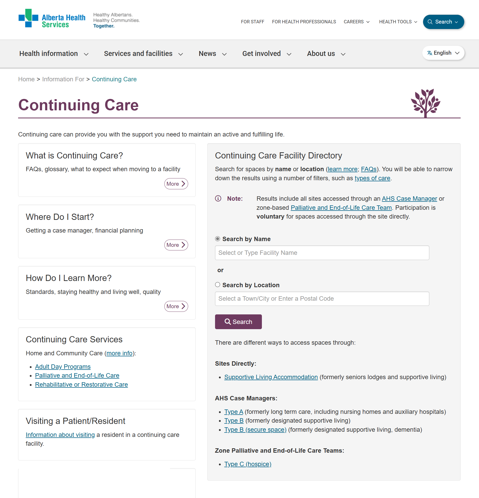

Continuing Care Facility Directory
Search and filter functionality refresh
Summary
I was tasked with creating high-fidelity mockups for a refresh of the Continuing Care Facility Directory (CCFD) in which users search for a variety of continuing care facilities. The refresh included newer branding and increased functionality.
Screenshots
Before

After
Background
My role
Design high-fidelity mockups for the Continuing Care Facility Directory (CCFD) user interface that includes updated branding, improved filters, and an increased number of facilities.
Target users
- Patients and families interested in various types of continuing care facilities
Goal
Provide a directory of continuing care facilities that includes:
- Contact and location information
- The ability for users to search for continuing care facilities by name or location and then filter results based on room type, common ammenities, or type of site
- Facilities for different levels of care
- Continuing care updated branding
- Various photos of each facility
- Facility features and details
- Family and resident ratings
Samples
Search
Users can search by facility or by city/town or postal code. When users search by location they will see matching facilities that they can filter further.
Sample facility details
Each facility features photos, location and contact information, amenities, fees, and family and resident ratings.
Results and outcomes
Learnings
- I learned that UX design can help display complicated information so that it is understandable by the user.
- Creating templates and breaking information up into different pages helps create a consistent and usable experience.